注 意 事 项 |
图 例 |
说 明 |
|
改 进 前 |
改 进 后 |
||
避免在加工平面中间设置凸台 |
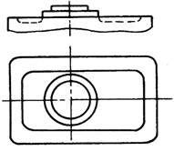 |
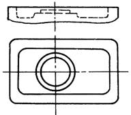 |
改进后可采用高效率加工方法（结构有特殊要求者例外） |
避免把加工平面布置在低凹处 |
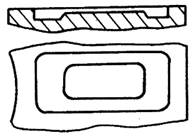 |
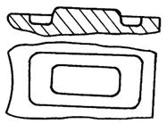 |
改进后可采用高效率加工方法（结构有特殊要求者例外） |
避免箱体孔的内端面加工 |
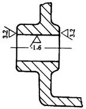 |
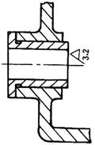 |
箱体孔的内端面加工比较困难，可用镶套零件代替 |
精加工孔尽可能做成通孔 |
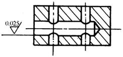 |
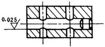 |
研磨孔做成通孔，改善了加工条件，较易保证加工精度，也便于测量 |
以外表面加工代替内表面加工 |
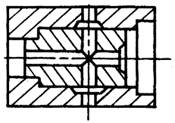 |
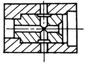 |
将配合孔内的内沟槽改为轴上的外沟槽，加工方便 |
设置必要的工艺孔 |
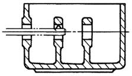 |
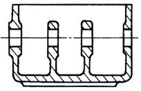 |
左图右壁未设工艺孔，镗内孔时要配作镗杆支承套，不便加工；设工艺孔后，可在箱体外支承镗杆，改善了加工条件 |
进行合适的组合，减少内凹面的加工 |
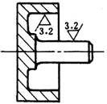 |
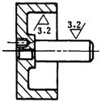 |
将难加工的内表面改在单独零件上，改善了加工条件，并可提高加工质量 |